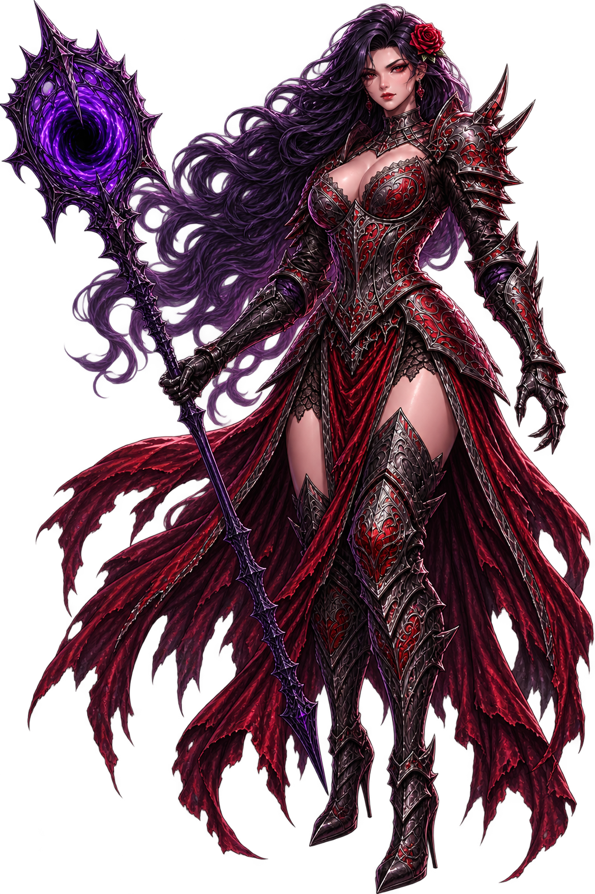
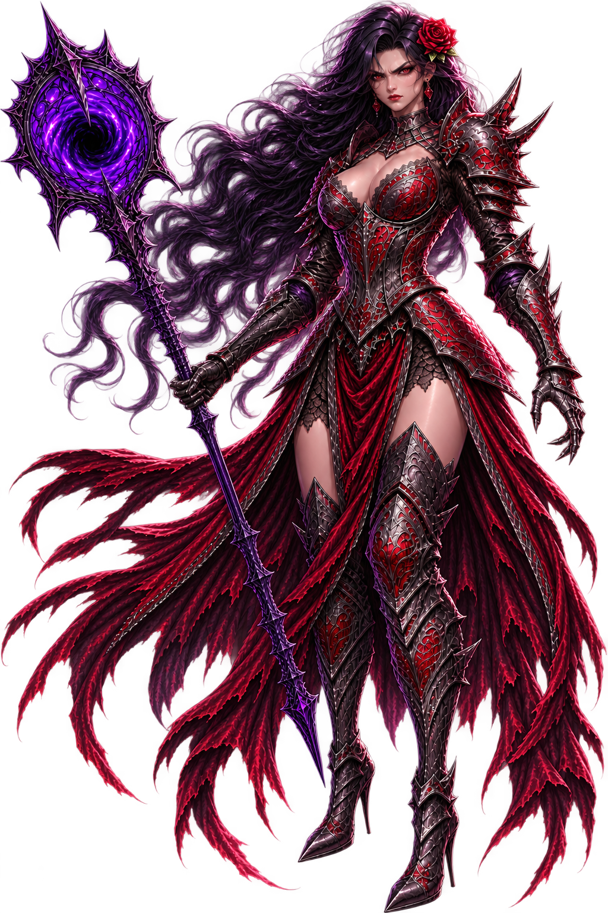

"Ora, ora... um visitante com sangue quente batendo nas portas de Zenathor. Veio oferecer seu pescoço ou só se perder no gelo?"

×

Território Restrito
"Tentando fuçar onde não foi chamado? Que adorável. Meus necromantes ainda estão erguendo os muros dessa área. Dê mais um passo e eu transformo seus ossos em decoração pro meu salão principal."